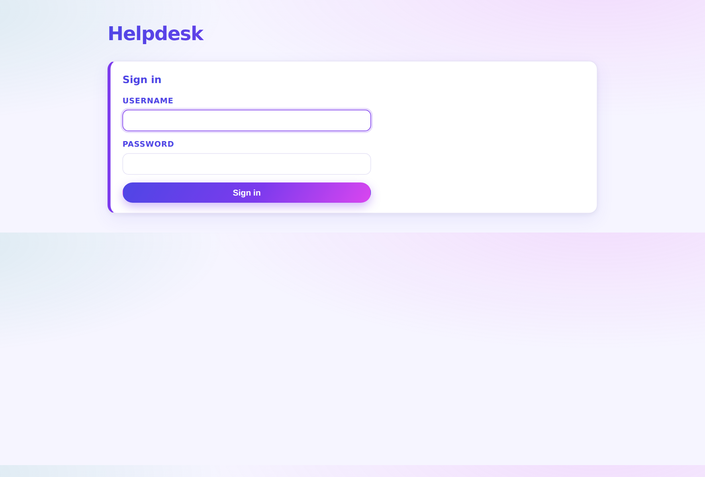
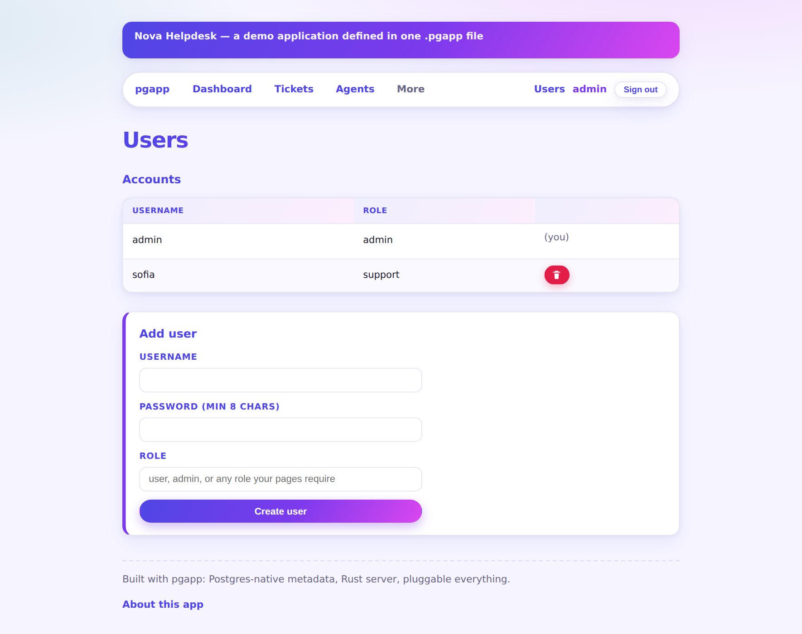

Add auth { } to the app and every page sits behind a sign-in:
argon2-hashed passwords, server-side sessions an admin can revoke by deleting a row,
and a one-time first-run screen that creates the admin account.
Then requires: admin on a page gates it by role — reads and writes. The Agents
page here returns 403 to the support team and renders for admins. Accounts are managed on the built-in
Users page, never in the markup: passwords don't belong in a source file.

